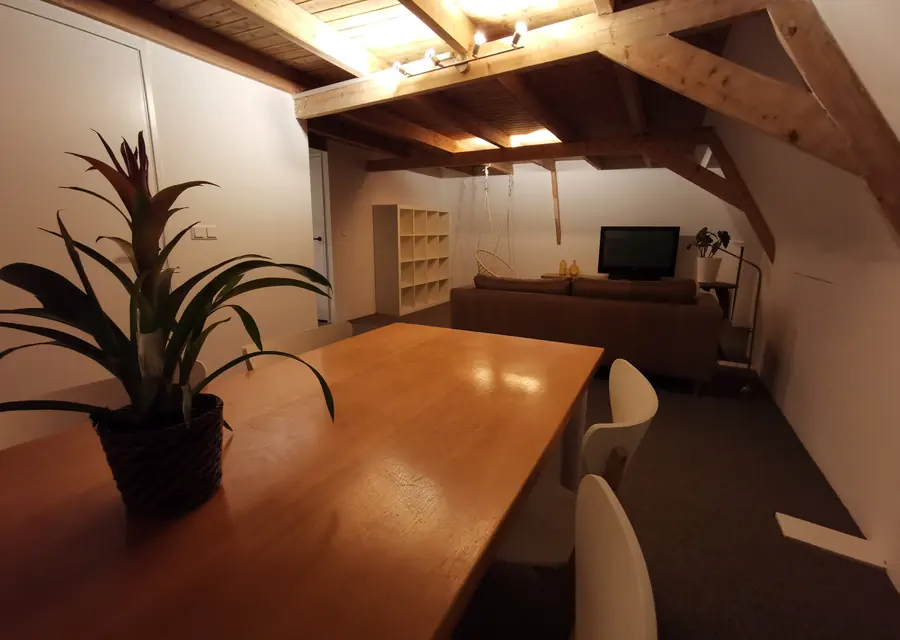
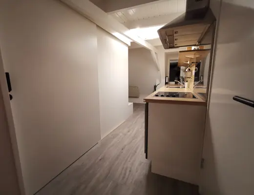
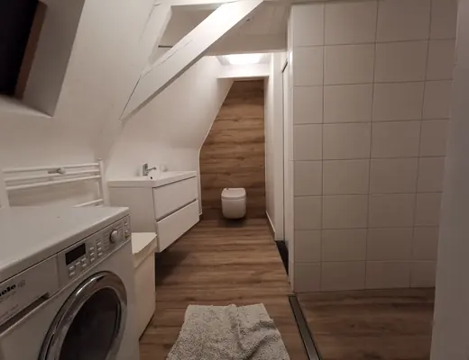
Zolder wordt appartement
Keuken, badkamer, slaapkamer en woonkamer onder de spanten.
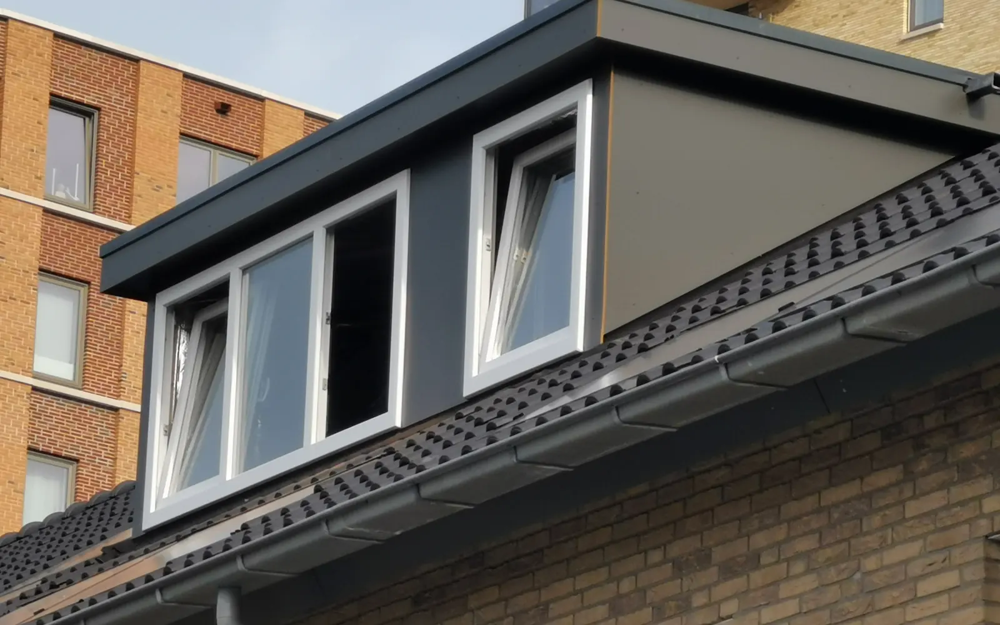
Woningrenovatie · Daken · Dakkapellen · Timmer- en tegelwerk · Reparaties in en om het huis
Een zolder die een appartement werd, een dak met nieuwe constructie en dakbedekking, een dakkapel die ter plekke met de hand is gemaakt. OXF doet het van A tot Z, met een eigen team van vaklieden.
Liever bellen? 06 36 03 79 38, ma t/m vr 7.00 tot 17.30 uur.
Telefoonfoto's van OXF zelf, uit de projectengalerij van 2019 tot 2023.



Keuken, badkamer, slaapkamer en woonkamer onder de spanten.
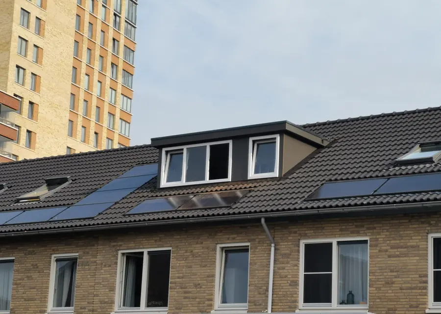
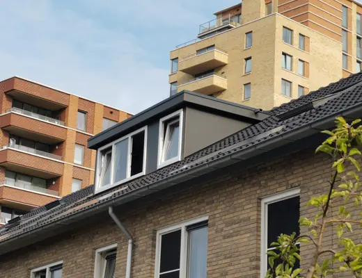
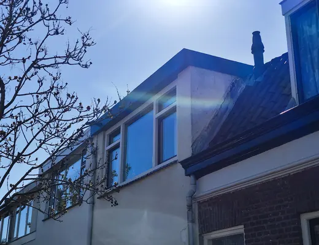
"Nog met de hand ter plekke" gemaakt, zegt OXF zelf.
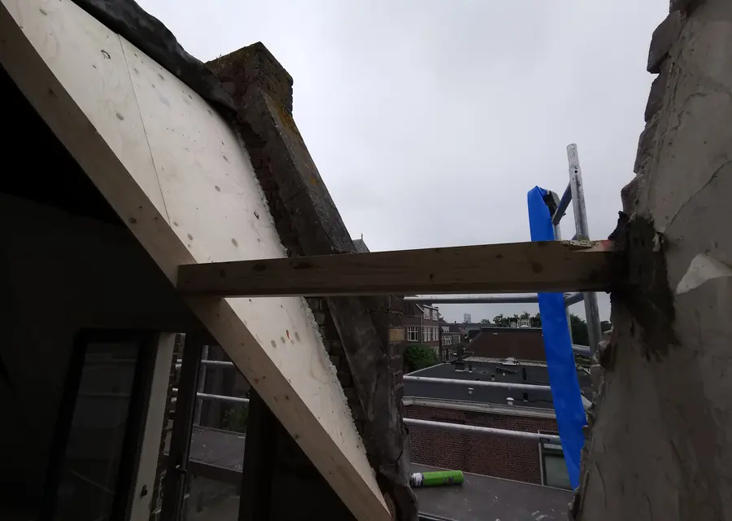
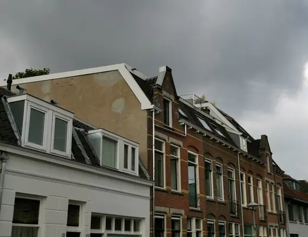
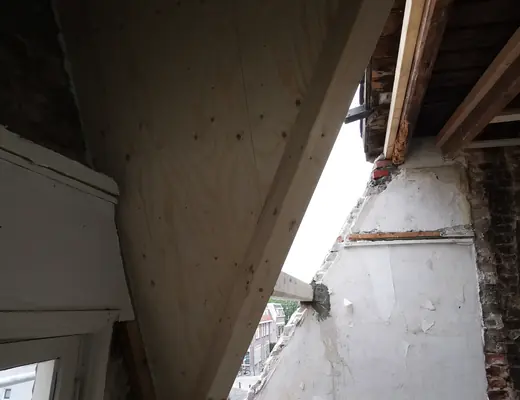
Werk aan de dakconstructie, van binnen en van buiten.
Zes soorten werk in twee groepen.

Complete renovatie, zolder tot appartement, daken en dakkapellen.
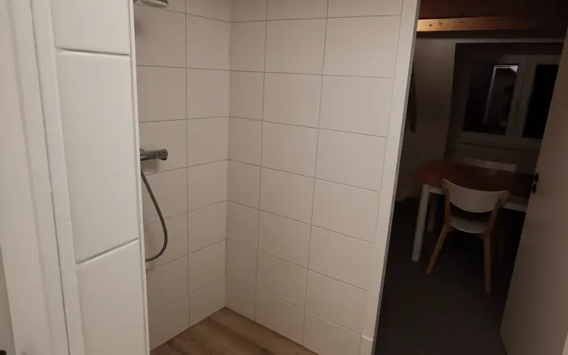
Timmerwerk, tegelwerk en sanitair, en reparaties in en rond het huis.
“Voor de 2e keer werk laten uitvoeren door OXF Bouw. Na lekkage moest het hele plafond vernieuwd worden. Sowieso heel snel kwamen ze al kijken en gaven ze goed advies. Daarna hebben ze alles heel vakkundig uitgevoerd. Ook gaan ze heel netjes te werk. Toen ik thuis kwam hadden ze alles schoon en opgeruimd achter gelaten. Heel erg tevreden en zeer betrouwbaar dus.”
“Bij toeval mee in contact gekomen omdat ze bij onze buren bezig waren, geen spijt van gehad. Hebben dak vernieuwd en gerenoveerd en daarbij laten zien dat ze verstand van zaken hebben. Zeer flexibel en denken met je mee in oplossingen. Zeer tevreden over het resultaat en ook prima prijs-kwaliteitsverhouding.. Als ik weer iets heb ga ik op zeker weer zaken met hun doen.”
Van een nieuw plafond tot een complete zolder. Vertel wat u wilt laten doen.